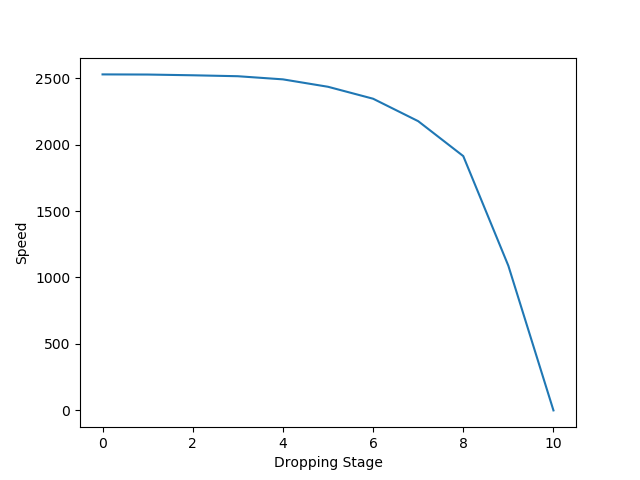
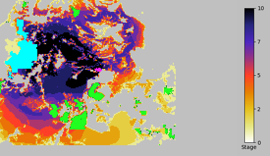
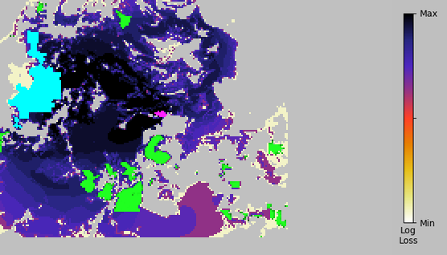
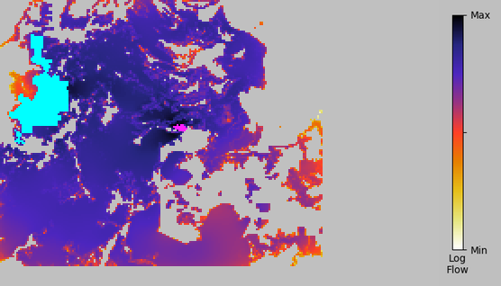
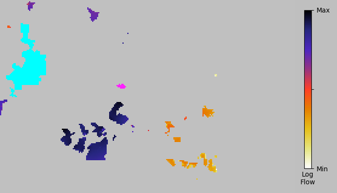
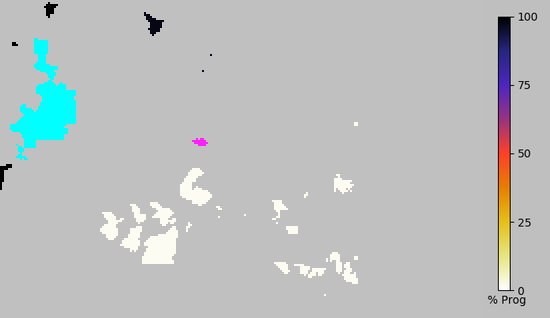

Condatis analysis results report.
Job: SabahPA4Drop
Analysis Type: Dropping
| Name | Lydia Cole |
| lydia.cole@liverpool.ac.uk | |
| Date presented | 09/21/2018 16:10:19 |
| Time taken for analysis | 0:02:35 |
Input Data and parameters
| Habitat layer | Forestundrop.tif |
| Source and Target layer | SourceTarget4.tif |
| Prioritisation Layer | Forestdrop.tif |
| Reproductive Rate (individuals per km2) | 2000.0 |
| Dispersal Distance (km) | 4.0 |
Processes
| Condatis Version | 1.00 |
| Dropping Steps | 10 |
| Step type | Number based |
Results
Output files:All files included in zip file SabahPA4Drop_results.zip (Click to download)
KEY RESULTS
SabahPA4Drop.csv
SabahPA4Drop_dropping_rank.tif
SabahPA4Drop_summary.csv
BACKGROUND RESULTS
SabahPA4Drop_speed_loss.tif
SabahPA4Drop_start_flow.tif
SabahPA4Drop_end_flow.tif
SabahPA4Drop_end_progress.tif
The Help Documentation on the Condatis website provides further information to assist
with the interpretation of Condatis outputs and with troubleshooting,
and can be accessed here.
Maps shown in .tif files can be viewed using a mapping platform,
for example QGIS(free and open source)
or ArcGIS.
Summary of results.
For this landscape of interest, the speed of movement of the modelled species changes from 2527.8304 before any habitat is dropped to 0.0000 once all 15569 additional habitat cells are lost. This represents a reduction in speed of 100.0000% with a loss of habitat of 15569 km2 (93.32% of the total habitat area).
Trajectory of dropping

Fig. 1: The speed, (inversely related to the time taken to cross from source to target), is plotted against the stage of dropping. Here the dropping mode is Number based. (The dropping of habitat cells from the Prioritisation layer is performed such that an equal amount of cells are dropped per stage). Speed is expected to get slower when habitat is lost from the landscape, but notice how severely speed is lost at different stages.
Dropping Rank Map

Fig. 2: An illustration of the rank of each habitat cell in the dropping analysis, with each drop stage represented by a different colour on the ramp. The source and target are labelled using MAGENTA █ and CYAN █ respectively. Non-droppable habitat cells are coloured █ GREEN. Lower-ranking cells were dropped earliest because they carried relatively little flow. Higher ranking cells were retained longer, and this implies that they are of higher priority. See table 1 for more information on the cells included in each rank.
Step Dropping Summary
| Stage | Dropped | Speed | Speed Reduction | Reduction per Cell |
|---|---|---|---|---|
| Initial | 0 | 2527.830416 | 0.000000 | 0.000000 |
| 1 | 1557 | 2526.752973 | 1.077444 | 0.000692 |
| 2 | 1557 | 2521.213080 | 5.539893 | 0.003558 |
| 3 | 1557 | 2514.095447 | 7.117633 | 0.004571 |
| 4 | 1557 | 2490.518128 | 23.577319 | 0.015143 |
| 5 | 1557 | 2434.739909 | 55.778219 | 0.035824 |
| 6 | 1557 | 2344.824474 | 89.915436 | 0.057749 |
| 7 | 1557 | 2175.999269 | 168.825205 | 0.108430 |
| 8 | 1557 | 1913.160283 | 262.838986 | 0.168811 |
| 9 | 1557 | 1088.044943 | 825.115340 | 0.529939 |
| Final | 1556 | 1.163104e-05 | 1.088045e+03 |
BACKGROUND RESULTS
Additional figures that enable further interrogation of wildlife movement in the landscape.
Loss of Speed

Fig. 3: The reduction in the speed of movement of the species from source to target with each stage of dropping is illustrated by the colour ramp, (note log scale).
The source and target are labelled using MAGENTA █ and CYAN █ respectively. Non-droppable habitat cells are coloured GREEN █. This is a spatial representation of the values in column 5 of Table 1, Reduction per cell. Higher values mean that the loss of these cells was highly detrimental to the total speed achievable in the landscape, and it implies these cells are of higher priority for connectivity.
Start Flow Map

Fig. 4: The pattern of flow of individuals from source to target across the landscape before dropping is performed, i.e. with all habitat cells within the Prioritisation Layer contributing to connectivity. Flow through each cell is represented by the colour ramp, (note log scale). The source and target are labelled using MAGENTA █ and CYAN █ respectively. Areas without habitat are grey, i.e. contain no data.
End Flow Map

Fig. 5: The pattern of flow of individuals from source to target across the landscape after dropping has been performed, i.e. with no habitat cells within the Prioritisation layer contributing to connectivity. Flow through each cell is represented by the colour ramp, (note log scale). The source and target are labelled using MAGENTA █ and CYAN █ respectively. Cells that have been dropped are grey, as are areas that never contained habitat.
Progress of movement

Fig. 6: The progress of movement from source to target is illustrated by the colour ramp. Bands of similar colour lie at a similar effective distance between the source and the target, e.g. a value of 50%, as demonstrated in the legend, represents the cells the species is expected to reach within half of the total 'travel' time. The source and target are labelled using MAGENTA █ and CYAN █ respectively.
Copyright
The text of this report is copyright Condatis team 2018. The report is intended for the use of the registered user and his or her immediate colleagues.
If you wish to disseminate the report or any extract of the text more widely, please seek written permission by emailing contact@condatis.org.uk
Responsibility for data
The figures in this report are derived from original data uploaded by the user.
Reproducing, publishing or transmitting these figures to third parties may violate copyright or database rights associated with the original data.
By uploading data to this site you asserted that you have the required rights and permissions to upload the data and indemnified this site from any claims by third parties with respect to the uploaded data.
You also indemnify this site from any claims by third parties with respect to your usage of this report, in whole or in part.
How to cite Condatis
For preferred citation formats, please refer to our website
Most recent publication of the underlying scientific method: Hodgson, J. A., Wallis,
D. W., Krishna, R., & Cornell, S. J. (2016). How to manipulate landscapes to improve the potential for range expansion.
Methods in Ecology and Evolution, 7(12), 1558-1566. Doi:10.1111/2041-210X.12614.
It is very useful for us to know how Condatis is being used and to be able to report on its influence for future grant applications;
therefore please send a copy of any publications to contact@condatis.org or make us aware of the application of your Condatis outputs.